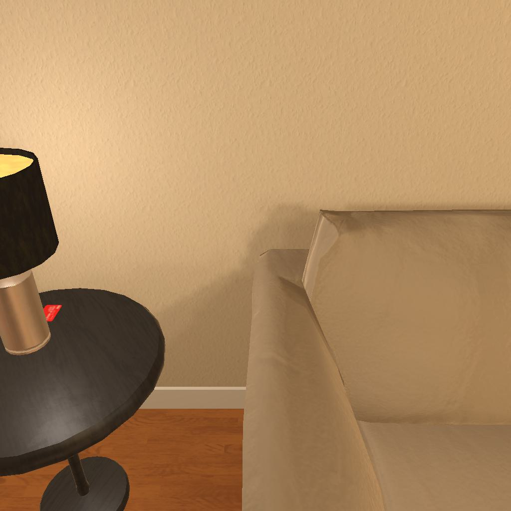

---------------------------------------------------------task: 7---------------------------------------------------------
--------------------------------------------------------------------------------------------------------------------------------------------------------------------
--------------------------------------------------------------------------------------------------------------------------------------------------------------------
Step:--------------------------------------------------------------------------3-------------------------------------------------------------------------------
----------------------------------------
VLM Prompt:
Image1:
Image2:
Image3:
**Instruction**
1. Analyze the provided images to identify all visible household objects and compare the difference between images (e.h. whether the object is opened or not and taken on hand or not), focusing on those relevant to the task description "put a creditcard in coffeetable."
2. Use the analysis of images and the task hint "The agent must find an object of the desired type, pick it up, find the correct location to place it, and put it down there." to answer the question: what is the most reasonable action in the choices for the task description "put a creditcard in coffeetable"?
3. Decide and write the answer using the template: The answer is: (i): , where i is the real number. If there is no desired object in images, search every place based on **Initial Observation** to find the object. And if no one is exactly correct, choose a similar answer.
**Initial Observation**
You are in the middle of a room. Looking quickly around you, you can see armchair (1-2), dresser (1), garbagecan (1), cabinet (1-4), drawer (1-4), coffeetable (1), sidetable (1), sofa (1)
**Answer Choices**
(1): go to armchair 1
(2): go to armchair 2
(3): go to dresser 1
(4): go to garbagecan 1
(5): go to cabinet 1
(6): go to drawer 2
(7): go to cabinet 2
(8): go to drawer 3
(9): go to cabinet 3
(10): go to drawer 4
(11): go to cabinet 4
(12): go to sofa 1
(13): take creditcard 2 from sidetable 1
(14): examine sidetable 1
**Answer**
Let's think step by step by following the instructions.
----------------------------------------
----------------------------------------
Original Response:
1. Analyzing the images:
- Image 1: A coffeetable with an open cardboard box and a remote control on it. No credit card is visible.
- Image 2: A golden statue, a plant in a pot, and some debris on the floor with a credit card among the debris.
- Image 3: A sidetable with a lamp on it and a credit card underneath the lamp. An armchair is also partially visible but no objects of interest on it.
2. Based on the task description "put a creditcard in coffeetable," we need to find a credit card and place it on the coffeetable. From the images provided, we can see a credit card in Image 3 on the sidetable. This credit card is the object relevant to the task.
3. Using the template, the answer would be based on the images and initial observation. The most reasonable action would be to take the visible credit card from the sidetable and place it on the coffeetable. Therefore, the answer is: (13): take creditcard 2 from sidetable 1.
----------------------------------------
----------------------------------------
>>> Refine Original VLM Response and Get Pure Action: No action
----------------------------------------
-----------------------------------------------------------------
Running time: 11.368217706680298 seconds
Total Money: 2.9871400000000006
-----------------------------------------------------------------
-----------------------------------------------------------------
Text Observation:Nothing happens.
-----------------------------------------------------------------
UNSUCCEED